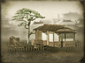
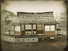
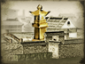
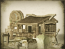

Buildings are used for the recruitment of military units and also subterfuge and religious agents. They also have a range of effects, either on a clan's economy or on the units and agents they produce. See each chain for details of how it can be used.
: +1
+4 to repression in this province") Stronghold
Stronghold
Castle Chain
The castle is the heart of the population and public order's main controlling factor. Each level of castle building increases the size of its castle town: providing an additional slot on which to build, enabling the recruitment of basic ashigaru units and determining how many units can be recruited there in each turn. Larger castles are more difficult to assault and spawn a larger defence force of samurai retainers and women. They are also the chief consumer of food in a province, so if farm building levels are not in step with castle size there will be food shortages.
- Cannon Range
Artillery Chain
This chain of buildings enables the production of artillery pieces and the recruitment of their crews.
 Training Camp
Training Camp
Improvement Chain
This chain of buildings improves your recruitment and replenishment capabilities, and can be specialised to improve the statistics of specific units.
 Inn
Inn
Business Chain
This chain of buildings, the result of a general population surge as society moves away from agriculture to industry and city life, increases wealth and happiness. It also enables the recruitment of geisha agents and increases their chances of success.
 Matchlock Towers
Matchlock Towers
Tower Defences Chain
This chain of buildings allows you to upgrade the tower defences of your castles independently from the castles themselves. All castles contain archer towers by default.
") Cottage Industry
Cottage Industry
Industrial Chain
This chain of buildings allows the specialisation in the cotton, crafts or silk industries, providing increases to both wealth and growth within a province.
: +1
-1 to happiness from modernisation
+1 to modernisation (clan development)") Cadet School
Cadet School
Modern Military Chain
This chain of buildings enables the development of modern, western methods of military training and units.

Enables recruitment of Rank 1 ishin shishi
Enables recruitment of Rank 1 shinsengumi
+1 to repression in this province
+1 to the current number of ishin shishi that may be fielded") Police Station
Police Station
Propaganda Chain
This chain of buildings allows you to set up a network for the spreading of Imperial or Shogunal influence throughout your territory. Shinsengumi and ishin shishi agents can be recruited here.
- Traditional Dojo
Traditional Military Chain
This chain of buildings enables the development of traditional Japanese methods of military training and units.
 Subsistence Farming
Subsistence Farming
Farming Chain
This chain of buildings increases both wealth and town growth within a province.
- Town
Settlement Chain
This chain of buildings provides the foundations for the expansion of your settlements. Each level of settlement opens up one extra building slot and improves tax income, but also reduces happiness due to modernisation.
: +1
Improves export capacity (increases trade values) by +100") Harbour
Harbour
Port Chain
This chain of buildings enables the construction of ships and the recruitment of their crews, as well as the recruitment of foreign veteran agents. You can branch out and specialise in trade or military ports further up the chain.
- Claypits
Clay Chain
This chain of province speciality buildings is enabled when clay resources are present in a province. Clay is used for the mass production of bricks and items of pottery, reducing the cost of building construction within a province.
 Open-pit Coal Face
Open-pit Coal Face
Coal Mining Chain
This chain of province speciality buildings is enabled when coal resources are present. Coal extraction and refining produces a useful trade good, but also reduces happiness due to modernisation.
- Open-pit Copper Mine
Copper Mining Chain
This chain of province speciality buildings is enabled when copper resources are present. Copper reduces the cost of and time required for the construction of copper-plated ships within a province.
- Placer Deposits
Gold Mining Chain
This chain of province speciality buildings is enabled when gold resources are present. Gold increases the wealth produced within a province, but the progression to advanced refining techniques causes reduced happiness due to modernisation.
- Buddhist Shrine
Holy Site Chain
This chain of province speciality buildings increases the charge bonus of all traditional units recruited within a province.
 Iron Ore Mine
Iron Ore Mine
Iron Chain
This chain of province speciality buildings is enabled when iron resources are present. Iron reduces the cost of artillery recruited within a province, but the progression to advanced refining techniques causes reduced happiness due to modernisation.
 Telegraph Office
Telegraph Office
Railway Chain
This chain of province speciality buildings is enabled when the topography of a province is suitable for railway construction. Town growth is also increased as a result of railways.
- Worm Farm
Silk Chain
This chain of province speciality buildings is enabled when silk resources are present. Silk production is increased by each building in the chain.
- Lead Ore Mine
Silver Mining Chain
This chain of province speciality buildings is enabled when silver resources are present. Silver increases the wealth produced within a province, but the progression to advanced refining techniques causes reduced happiness due to modernisation.
- Blacksmith
Smith Chain
This chain of province speciality buildings is available in those provinces known for their smithing skills. The armour and missile accuracy of troops recruited here is improved, but the progression to advanced techniques causes reduced happiness due to modernisation.
- Smugglers' Cove
Smuggling Chain
This chain of province speciality buildings improves the quality of geisha agents recruited in a province. Town growth is also increased.
- Tea Plantation
Tea Chain
This chain of province speciality buildings is enabled when tea resources are present in a province, providing a trade good that will always be in demand.